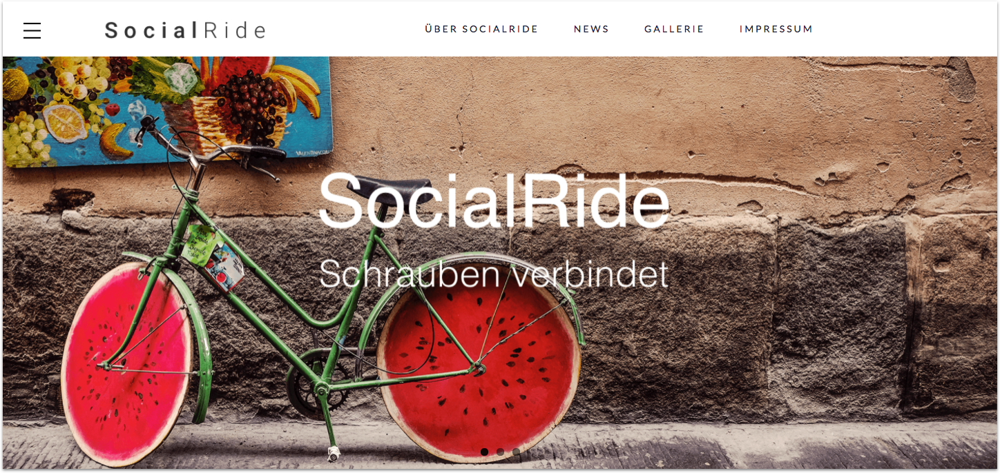
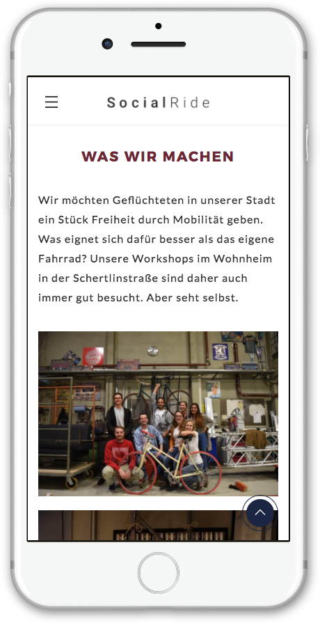
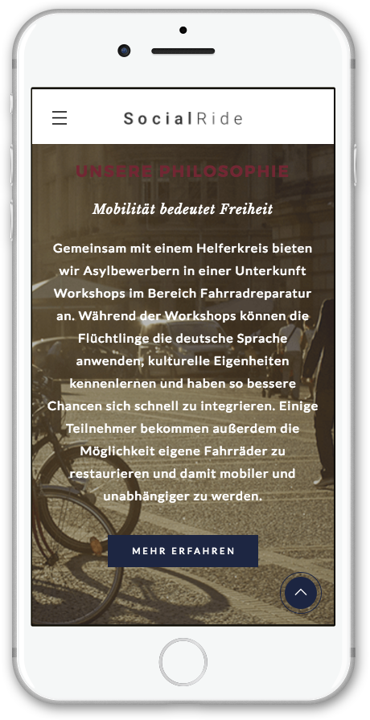
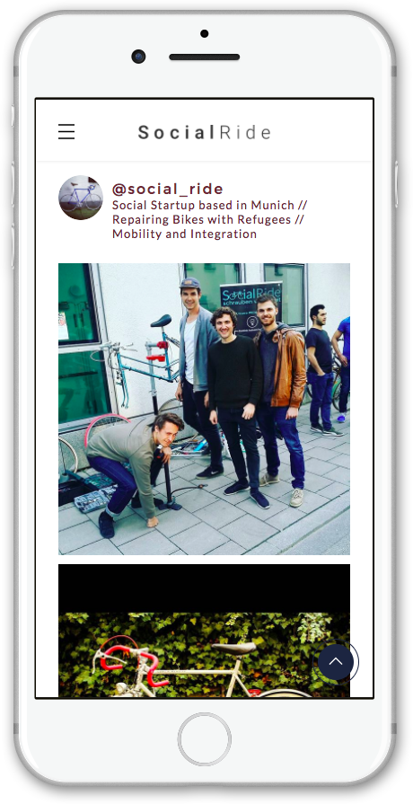

<section>

  <project-intro [select]="'social-ride'"></project-intro>
  <project-navigation [index]="4" [previous]="'buntes-deutschland'" [next]="'tim'"></project-navigation>
  <div class="Picture-Container">
    
    <div class="Picture-Caption">Home screen of the Social Ride web page</div>
  </div>
  <app-project-stats [select]="'social-ride'"></app-project-stats>
  <div class="Picture-Container--multiple">
    <h3 class="Section-Heading">Mobile first is key</h3>
    
    
    
    <div class="Picture-Caption">Refugees generally use mobile devices and do not have regular access to laptops and desktop PCs.</div>
  </div>
  <app-footer [project]="'socialride'"></app-footer>
</section>
